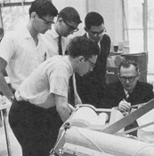
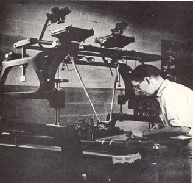
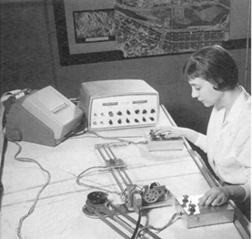
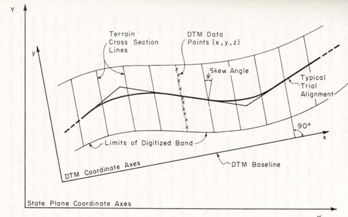

第5章：麻省理工学院土木工程软件开发
作者注：我曾在1957年9月至1961年6月期间担任麻省理工学院土木工程系的本科和研究生助理。
尽管麻省理工学院通常被视为机械工程设计软件研究的主要中心，但也是早期重要的土木工程软件开发地点。大部分工作是在20世纪50年代晚期到60年代中期，在查尔斯·L·米勒教授的领导下完成的。他是最早看到相对新的计算机潜力的人之一，当他于1955年作为25岁的测量助理教授加入麻省理工学院教职时。在此角色中，他很快成为了麻省理工学院摄影测量实验室的负责人。在他的指导下，麻省理工学院的测量教学从传统的仪器取向开始发生改变，教授学生如何处理和分析空间数据。

测量作为一项技术技能在18世纪初开始发展，与此同时，现代仪器的前身，如测距仪和水准仪也开始出现。美国最早的知名测量师之一是年轻的乔治·华盛顿。美国广阔的开放空间促进了矩形网格系统的发展，为新兴的美国提供了测量专业的培养。在20世纪初期，测量和土木工程密切交织。随着结构工程、公路设计和卫生工程成为土木工程课程的一部分，测量变得更加专业化。近年来，航空摄影、激光距离测量、数据记录器和地理空间定位系统（GPS）已经取代了传统的测量仪器，专业测量的实践变得高度专业化。
获取地形数据的新技术
当米勒（Miller）首次加入麻省理工学院教职时，他觉得有两个研究领域需要探索。一是开发更好的获取空间数据的方法，重点是利用新的立体视觉技术；另一个是利用新兴的计算机技术来处理这些数据。摄影测量学基本上是利用照片进行空间测量的科学，而立体视觉是在三维中查看这些照片图像。利用重叠的航空照片和各种投影设备，可以创建等高线地图，并测量三维地面坐标，而不必在实地测量区域，除了建立少量控制点。
在1950年代中期，摄影测量实验室安装了如图5.2所示的立体绘图仪。将一对重叠的航空照片透明片放置在该装置的顶部投影仪中，并仔细对齐，以便在桌子上投射一个聚焦的图像。查看设备使操作员通过调整光点，使其出现在地形表面上，从而确定海拔高度。同时，齿轮机构指示该位置的X和Y坐标。记录足够的数据以用作计算土方量的计算机程序的输入是一个非常耗时的过程。在研究生丹·舒尔茨（Dan Schurz）的指导下，实验室开始建造一种设备，将立体绘图仪数据转换为三维坐标值，并使用打孔机输出该数据。这个设备大约在1959或1960年开始运行。

我能够找到的麻省理工学院开发的第一个软件包是由保罗·O·罗伯茨于1956年为IBM 650计算机编写的借坑程序（即计算从砾石坑或类似区域开采的材料体积）。当时，罗伯茨是一名研究助理，他与交通工程助理教授文森特·J·罗格芬一起工作。米勒似乎并没有参与到该系最早的计算机活动中。IBM 650是一台鼓式计算机，计算能力不如当前的手机。数据输入采用80列打孔卡，输出也是打孔卡。这台计算机速度慢，使用不便，需要正确顺序的打孔卡，但这是一个开始。
罗伯茨的工作是麻省理工学院土木卫生工程系和马萨诸塞州公共工程部之间的联合公路研究项目的一部分。借坑程序直接使用从测量现场记录在打孔卡上的数据。计算机读取这些数据，确定原始地形和借坑的当前水平线。计算每个横截面的面积，并使用平均端面法计算体积。结果被650计算机打印在当时被称为制表机的设备上。输入打孔卡包含80列数据，需要一个控制线面板，以便650计算机了解不同数据字段的含义。打印程序输出也需要类似类型的控制面板。这个程序在短短几分钟内处理了一个技术人员需要花费数小时才能完成的计算。
米勒最初将摄影测量实验室的工作重点放在围绕数字地形模型的一系列公路设计程序的开发上，并建立获取数字地形数据的工具，既可以通过摄影测量，也可以通过数字化现有等高线图。到1956年，美国公共道路局（今日联邦公路管理局的前身）资助了这项工作的大部分内容。菲尔·格拉丁和我一起制造的一个设备是从等高线图记录地形值并将这些数据直接打在打孔卡上的设备。见图5.3。
数字地形模型概念
DTM概念是工程师思考公路位置、建立水平和垂直对齐和计算土方量的重大突破。传统的公路设计手动方法包括选择初步的水平对齐线，然后从现场测量或现有等高线地图中获取垂直于该对齐线的横截面地形高程。这种技术已经发展了近100年，并且在对齐线没有重大调整的情况下运作得相当好。如果有调整，那么就必须获取新的横截面地形数据。

DTM方法基于地面表面可以通过大量的XYZ数据点进行统计表达的概念。这些数据可以基于现有的坐标系统，例如国家平面系统，也可以基于为特定项目定义的任意坐标系统。从根本上讲，所有当代的公路设计应用程序今天都使用这种方法。在MIT期间实施的方法涉及建立项目特定的基线，然后沿着扫描线记录地形数据。高程数据可以在扫描线上给定的间隔或预定义的高程记录，相应地对应于硬拷贝地图上的等高线高程。
米勒和他的研究助手团队理解地形数据的统计显着性以及随机误差对整体结果的影响微小。在MIT开发的第一批公路设计程序称为数字地形模型系统。这个软件套件包括地形数据编辑、水平对齐、垂直对齐和土方计算等近十个单独的程序。之所以有这么多程序，是因为它们是为当时州公路部门使用的IBM 650计算机编写的。650的存储程序和数据的能力有限。因此，每次运行程序时，必须将每个程序和相应的设计和地形数据加载到计算机中。一个程序的打孔卡输出成为下一个程序的输入。
例如，一个程序用于使用交点（称为P.I.s或两个公路直线理论上相交的坐标）和与这些P.I.s相关的曲线半径计算公路中心线。该程序的输出是公路中心线的完整定义。然后，另一个程序使用此输出计算定义偏移量的几何形状，例如中央分隔带的边缘或公路的外边缘。下一步是使用这些数据计算道路的垂直对齐。最后，另一个程序可以计算土方体积。

这些程序经历了多次迭代，到了1960年，麻省理工学院还推出了一套用于公路位置分析和初步设计的新套件。这套软件名为DTM II，包括地形编辑程序(TD-5)、水平对齐程序(HA-5)和道路和土方程序(EW-5)。这个软件是由保罗·罗伯茨和鲍勃·拉弗拉姆设计的，实际编码主要由罗杰·鲍斯特、德怀特·雷伯格和R·B·多吉特完成，经验丰富的公路工程师和测量员爱德·纽曼进行测试。纽曼与米勒在麻省理工学院和CLM/系统工作了30多年，如下所述。
DTM系统远非完美解决方案——数据采集耗时，程序运行缓慢，输入数据顺序容易出错，而且可绘制输出的机器很少。这一切在1960年左右迅速发生了变化。麻省理工学院土木工程系安装了一台更高速的计算机IBM 1620，CalComp推出了第一个专门用于绘制数字计算机输出的绘图仪，新的高级编程语言如FORTRAN也更容易获得。大约在1960年，摄影测量实验室成为了土木工程系统实验室。
COGO技术的发展
在土木工程界中，米勒最为知名的或许是作为COGO的原始开发者。COGO是几乎所有测量和道路设计软件的核心，它是“问题导向”语言的最早例子之一。它通过定义点、线、角和曲线之间的相互关系，使用户能够解决各种几何问题。有趣的是，尽管米勒为他监督下的大多数项目提供了一般的指导，但COGO是他自己的个人项目。
简单来说，COGO语句定义了一个特定的几何实体，例如地面上的一个点、两个点之间的长度或两条线之间的角度。通过告诉计算机新点位于从先前定义的点出发的特定方向和特定距离处，可以计算出一个新点。例如，一个典型的COGO语句可能是这样的：
1 | LOCATE POINT 2 FROM POINT 4, DISTANCE 125.16, BEARING N45 15 20 E |
最终，COGO 的速记版本被开发出来，这样这个陈述就可以被写成：
1 | LOCATE POINT 2 FROM POINT 4, DISTANCE 125.16, BEARING N45 15 20 E |
更复杂的计算系列可以启动，包括完整的遍历和公路交叉口。这些陈述是通过打孔卡或其他方式输入到计算机中的，COGO程序会依次遍历这些陈述，计算所请求的数据并保存它。
COGO的实验前身是为IBM 650编写的，取名为Tricky Dicky Traverse。我一直无法确定这个名字的来源，除了理查德·尼克松当时是副总统。米勒在一个周末在信封背面勾画出COGO的基本概念，并很快开始在新的IBM 1620计算机上实现它。在1960年代，米勒还为波多黎各公路局做了一些咨询工作，第一个COGO版本于1960年中期安装在他们最近安装的20K字符1620上。随后，在MIT的1620上安装了一个研究版本。接下来，它在数字小型计算机和IBM大型计算机上实现。这些不同的实现副本被提交到许多软件库，并成为公共领域软件包。
有趣的是，米勒声称COGO遭到了“计算机界”的攻击。他接着说：“只有用户鼓掌。据说COGO将使任何人都能使用计算机。本质上，反对COGO的理由是它太用户友好了…”
其他人开始探索问题导向语言的概念。
独立于MIT，史蒂夫·芬维斯博士实现了一个结构工程程序STRESS（STRuctural Engineering System Solver），使用了类似的问题导向语言方法。
ICES的发展
虽然米勒只是一名没有终身教职并且从未获得博士学位的副教授，但他于1961年被任命为土木工程系主任，一直担任该职位直到1969年。在32岁时，他成为该职位的最年轻担任者，并迅速着手将该系带入现代计算机时代。他的第一步是聘请芬维斯担任访问教授。
该系早期努力创建新的公路设计方法，最终导致了一项名为ICES或集成土木工程系统[11]的重大开发项目的启动，其中包括流行的程序，如ROADS，STRESS和STRUDL以及COGO。 MIT的开发人员是问题导向语言的坚定支持者，这种关注点在ICES项目中得以延续。在丹尼尔·鲁斯和乔·萨斯曼的带领下，开发团队创建了自己的编程语言ICETRAN，这是一种FORTRAN的土木工程变体和一种面向工程软件的操作系统。米勒喜欢称这群本科生和研究生为他的“COGO孩子们”。
ICES的基本前提是，为了使工程师能够解决完整的问题解决方案，从一个应用任务获得的结果需要作为输入传递给后续任务。讨论工程师使用ICES时，鲁斯评论道：“在他的问题解决过程中，他可以离开一个子系统，进入另一个子系统执行计算，然后使用刚刚获得的结果重新进入原始子系统。”[12]
每个应用程序（在MIT术语中称为子系统）使工程师能够定义一系列要应用于该问题数据集的任务，并以对工程师有意义的术语进行定义。就像几何问题可以用COGO语句定义一样，结构、土壤工程或公路设计问题可以用与该工程类型相关的术语进行定义。这种方法的优点之一是，如果数据项发生变化或工程师想要更改问题定义，这些源语句可以轻松编辑，然后重新运行问题。
应用子系统由一系列子例程组成，执行每个问题语句定义的任务。这些并不是庞大的单体程序，而是由ICETRAN编写的一系列软件模块。此外，ICETRAN本身并不是软件编译器，而是程序员所说的“预编译器”。要创建应用子程序，程序员将在ICETRAN中编写必要的代码，然后另一个程序将其转换为标准的FORTRAN源代码语句。那个FORTRAN代码被编译以创建应用子程序。ICETRAN软件还被实现以处理复杂数据数组的管理，这是当时基本操作系统并不擅长处理的任务。
为了解决设计问题，工程师会以一系列问题为导向的陈述中定义数据和要应用于该数据的任务。 ICES执行程序会处理这些陈述，检查错误和不一致性。然后，软件会调用单个子程序来执行陈述。一个陈述被完全处理后才会执行下一个，尽管这通常对用户来说是透明的。
到1960年代中期，麻省理工学院的土木工程软件开发已经在一台工业级计算机上进行，这是一台IBM System 360 Model 40，具有128K（32位字）内存和一对磁盘驱动器。程序员和应用用户开始使用字母数字终端，而不是使用穿孔卡，尽管ICES应用程序的早期版本仍预见了使用穿孔卡进行数据输入和打印输出。
STRUctural Design Language（STRUDL）的开发由约翰·比格斯教授[13]和后来成为麻省理工学院教授的罗伯特·洛切领导。这个软件首次向用户提供于1967年左右，是对早期的STRESS程序的重要扩展，因为它融合了ICES管理数据和其他功能的能力。用户可以定义具有刚性或铰接节点的二维和三维框架结构。工程师可以定义基本结构，进行初步分析，然后通过简单地改变节点位置或成员大小和方向来进一步完善结构设计。一个简单的STRUDL语句可能会这样写：
1 | JOINT 2 COORDINATES X 10.5 Y 20.6 |
与COGO和其他ICES程序一样，这些命令也提供了简化版本。分析输出被存储，这样设计工程师就可以请求打印附加信息，而无需重新运行分析。
ICES ROADS是在STRUDL开发期间开发的。负责ROADS的关键人物是John Suhrbier，他得到了John Prokopy、Edward Sullivan和Wayne Pecknold的协助。ROADS由四个主要模块组成。第一个模块处理地形数据库的创建，这是进行任何设计工作的必要步骤。虽然有特定的命令用于输入地形数据，但其他程序也可以格式化大量输入此数据。第二个模块用于定义拟议公路的水平和垂直对齐，而第三个模块用于定义道路横截面和计算土方量。这些模块与ICES COGO密切配合，实际上，许多COGO命令在ROADS中被复制，尽管在使用的计算机系统上只有一个COGO代码副本。
第四个模块用于模拟车辆性能。有许多命令可用于描述主题公路，包括车道描述、交通信号和交叉口。然后，用户可以定义不同时间的车辆类型和交通量。软件将计算预期的车辆运营成本和平均速度。总体而言，ROADS的命令语言比大多数ICES应用程序更复杂。ROADS一个令人惊讶的方面是，除了所谓的“字符图”之外，似乎没有任何方法从该软件包中产生绘制输出。
逐渐地，更多的应用程序被添加到ICES系统中，包括用于交通网络分析的TRANSET，用于土壤工程的SEPOL和LEASE，用于桥梁设计的BRIDGE以及用于项目管理的PROJECT。ICES的一个优点是，用户可以使用系统开发人员使用的相同软件开发工具扩展各个程序的功能，这与多年后使用Bentley Systems的MicroStation Development Language（MDL）类似。ICES的主要缺点是它没有整合交互式图形-这项技术实用性还需要几年时间。米勒对ICES的影响的观察是有趣的：
“ICES在应用计算机技术方面取得了相当的成功。但是，作为土木工程专业的整合，ICES并不成功。一些人观察到-也许是正确的-我将ICES与我作为麻省理工学院土木工程系主任试图重新组织和振兴土木工程系的尝试混淆了-这是部分而有争议的成功。”
米勒离开麻省理工学院
1968年，米勒成为麻省理工学院城市系统实验室的负责人，并一直担任该职位直至1977年。同年，尼克松总统任命米勒负责交通运输工作组。到了20世纪60年代末，ICES项目开始逐渐结束，Roos、Sussman和Logcher等人离开了，开始迎接新的挑战。1970年，米勒被任命为工程学副院长，并在查尔斯·斯塔克·德雷珀实验室担任临时主任一年，期间该实验室正在从麻省理工学院仪器实验室转型为独立的研究机构。
1977年，米勒离开了麻省理工学院，将重心转移到了他早先在佛罗里达坦帕建立的软件和土木工程咨询公司CLM/Systems上。该公司开发了一系列土木工程软件应用，包括COGO、TOPO用于处理地形数据和ROADS用于公路设计。1986年，这些软件被整合成一个名为CLM CEAL（土木工程自动化库）的产品，被多个州公路部门和土木工程公司所使用。
事实上，CLM/Systems最初是CLM/Research，成立于1955年，当时米勒首次加入麻省理工学院教职工作，需要一个用于进行咨询工作的平台，超出了摄影测量实验室的研究活动范围。1968年，公司更名为CLM/Systems。直到1981年左右，该公司主要是一家咨询公司，致力于城市规划研究和协助客户实施计算机技术。此后，米勒认为需要一种新一代的土木工程软件，并开始着手开发。
该公司很快发展到约30人，其中没有一个被归类为销售或市场营销。该软件主要通过口碑销售。CEAL的爱好者遍布许多州和县的公路部门，包括佐治亚州、华盛顿州、纽约州、达拉斯和洛杉矶等。在一段时间内，McAuto将CEAL作为MOSS系统的替代品销售，自20世纪80年代中期以来一直得到支持。CLM/Systems还与Intergraph有着密切的合作关系，甚至销售了一个名为CEALstation的产品，它是CEAL和MicroStation的组合。
离开麻省理工学院后的20多年里，米勒仍然被称为“教授”。他总是想成为老师。以下是他对成功使用CEAL的指南，它们适用于任何工程自动化软件包。
- 不要试图强行让CEAL变成它不是的样子，也不要等待下一个版本。要按照现有的样子来使用CEAL。
- 如果你试图让CEAL像你熟悉的其他软件包一样运行，你会失败的。每个软件包，就像每个人一样，都有自己的“个性”。你不能改变它而不产生严重的后果。
- 不要与系统对抗，要学会按照它的方式来使用。你可以在CEAL上做出创造性、聪明、富有想象力和有能力的事情，但是你不能傲慢自大。
- CEAL是一个不断发展的非常动态的系统。总会有下一个版本即将发布。但是，等待它是徒劳的。你会一直等待下去。
- 与此同时，当前版本的CEAL包含了任何用户一生都无法掌握的更多功能。最好开始使用手头的工具。
到了1990年代中期，CEAL已成为一款全面的土木工程应用程序，可在广泛的工程工作站和基于DOS的个人电脑上使用。到1995年，该软件已经拥有了图形界面，尽管在这方面它与竞争产品相比还不够快速。CEAL（包括COGO）的价格从单个许可证的8000美元到订购100份以上每个许可证只需1500美元不等。
虽然这款软件的质量从未受到质疑，但该公司在1990年代初期很少有超过100万美元的收入（早期它销售的是由计算机硬件和软件组成的一体化系统，收入超过200万美元），到1996年它已经陷入了死亡螺旋。在米勒的健康状况开始恶化时，有人试图出售该公司。不幸的是，没有人接手，该公司在接下来的几年里逐渐消失。[19]
可能有几百个不同版本的COGO由众多公司和组织实施，其中大多数人都以原始版本作为他们开发的起点。这些开发人员没有向米勒支付任何版权费，而米勒在2000年去世了。
参与DTM和ICES活动的早期参与者中，包括特隆德·卡尔斯塔德、罗伯特·洛格彻、丹·鲁斯和约瑟夫·萨斯曼等人，他们一直在麻省理工学院工作，并对该学院的学术卓越做出了重大贡献。其他人离开了，并在整个工程专业中扩展了米勒的思想。勒罗伊·埃姆金去了乔治亚理工学院，在那里扩展了ICES STRUDL的功能，并将其转化为非常成功的GTSTRUDL程序。巴里·弗拉克斯巴特则去麦克唐纳自动化公司（McAuto）担任分析和开发经理，该公司授权ICES软件并以分时共享模式销售它，直到1980年代。
正如第19章所述，McAuto可能是ICES服务的最大销售商。该公司使用一个名为STRUDL-DYNAL的程序为STRUDL添加了动态功能，用于设计许多结构，包括新奥尔良的路易斯安那超级巨蛋、海上油气平台和核电站。该公司对ROADS和COGO进行了增强，并将卫生和暴风雨下水道设计程序添加到ICES套件中，简称SEWER。到1975年，许多McAuto客户都在使用图形终端，例如Tektronix 4010和4014，以分时共享模式与这些ICES程序进行交互。
McAuto还推出了一个名为FASTDRAW的图形程序，使用户能够创建用于STRUDL等程序的输入数据并查看结果的图形。通过时间共享使用STRUDL可能会非常昂贵。一个大型结构（800个节点和950个钢构件）的完整STRUDL-DYNAL分析可能会花费高达4000美元。[20]
米勒的工作最重要的一点，也是我认为他应该得到更多认可的原因，是他从未认为MIT版本的COGO是专有技术——他让它向全世界开放，没有任何限制。我能想到的唯一另一个类似的例子是万维网的创造者Tim Berners-Lee。想象一下，如果这两位先驱决定专利他们的技术，并要求我们每次设计一个公路交叉口或使用万维网时支付版税，那么我们今天可能会处于什么地步。
我非常高兴代表米勒教授及其家人在德克萨斯州达拉斯的A/E/C SYSTEMS 2002会议上接受2002年Ed Forrest奖。这个奖项是以A-E-C Automation Newsletter的创始人命名的，每年颁发给在AEC软件领域做出重要贡献的个人或团体。
[1] Surveying had long been a key component of civil engineering education since many civil engineering graduates started their careers doing surveying work. Until 1950, MIT’s Civil Engineering Department ran a surveying summer camp called “Camp Tech” for undergraduates in East Machias, Maine. To quote the department’s Spring 2002 newsletter: “Installing a benchmark is no longer considered a mandatory job skill for graduates.”
[2] MIT Civil and Environmental Engineering. Photograph is probably around 1965 or 1966.
[3] Miller, C. L. and LaFlamme, The Digital Terrain Model – Theory and Application, MIT Photogrammetry Laboratory Publication 117, March 1958
[4] As an assistant professor of civil engineering, Roberts was the my masters thesis advisor in 1961
[5] Now the Department of Civil and Environmental Engineering
[6] MIT Joint Highway Research Project Research Report No. 20, Revised Second Edition, September 1957
[7] Technology Review, June 1959
[8] Digital Terrain Model System Manual of Electronic Computer Programs for Highway Location and Design, November 30, 1960
[9] The MIT Civil Engineering Systems Laboratory received one of the first 1620 computers produced by IBM. It arrived damaged and was replaced a few weeks later by a new machine. Interestingly, the shipping container had NASA’s Marshall Space Flight Center marked out and the shipping label changed to MIT.
[10] Miller, Charles L., The COGO Story – An Odyssey, CLM/Systems Publication, 1989
[11] In addition to the U. S. Bureau of Public Roads and the Massachusetts Department of Public Works, ICES sponsors included IBM Corporation, the National Science Foundation, McDonnell Automation Company and the Ford Foundation.
[12] Roos, Daniel, An Integrated Computer System for Engineering Problem Solving, AFIPS Conference
Proceedings, Volume 27, Part 2, Thompson Book Company, 1967 Pg. 152
[13] Professor Biggs was my structural engineer instructor the late 1950s.
[14] Biggs, John M. and Logcher, Robert D. – ICES STRUDL I – Structural Design Language – General Description – MIT Structures Division and Civil Engineering Systems Laboratory, September 1967
[15] Suhrbier, John H., et al – ICES ROADS I – Roadway Analysis and Design System – Engineer’s
Reference Manual – MIT Civil Engineering Systems Laboratory, March 1968
[16] Roos, Daniel, An Integrated Computer System for Engineering Problem Solving, AFIPS Conference
Proceedings, Volume 27, Part 2, Thompson Book Company, 1967 Pg. 151
[17] Miller, Charles L., The COGO Story – An Odyssey, CLM/Systems Publication, 1989
[18] A-E-C Automation Newsletter, December 1990, Pg. 5
[19] I was hired by Miller to find a buyer for his company but was unable to do so.
[20] Dallaire, Gene, The CRT Computer Graphics Terminal: Indispensable Design-aid for Some Structural Engineers, Civil Engineering, February 1976